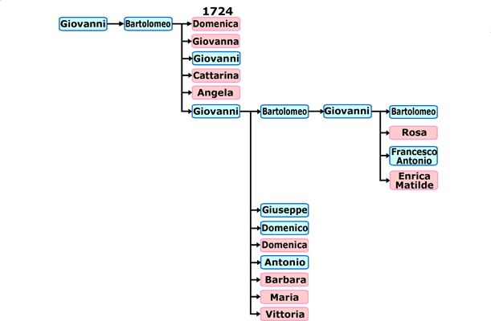

Árvore genealógica de uma família Zannirati / Zanirati / Zaniratti, que viveu durante os séculos XVIII e XIX nas vilas de Salvatónica e de São Biagio, longe 4 Km uma da outra, ambas na cidade de Bondeno, na província de Ferrara.
Acho que esta família foi parente com o Francesco Zaniratti [página não recuperada no acervo], progenitor da outra árvore que começou na vila de São Biagio. Talvez poderemos confirmar esta hipótese, depois de mais pesquisas. Edmondo.
Clique no nome que você procura para ir até a sua página pessoal.

Fotos recordação das pesquisas: [imagem histórica não recuperada: ../Mini/SanBiagioEXT.gif (A igreja de São Biagio)] [página não recuperada no acervo] [imagem histórica não recuperada: ../Mini/SanBiagioINT.gif (Os volumes lidos na igreja de São Biagio)] [página não recuperada no acervo] [imagem histórica não recuperada: ../Mini/Salvatonica.gif (Em Agosto 2004 pesquisamos na paróquia de Salvatonica)] [página não recuperada no acervo]
19.03.2005 Página inicial